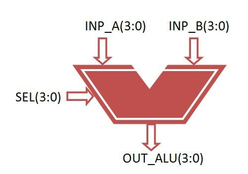

4-bit ALU
ALU
ALU's comprise the combinational logic that implements logic operations such as AND, OR, NOT gate and arithmetic operations,
such as Adder, Subtractor.
Functionally, the operation of typical ALU is represented as shown in diagram below,

Functional Description of 4-bit Arithmetic Logic Unit
Controlled by the three function select inputs (sel 2 to 0), ALU can perform all the 8 possible logic operations

4-bit ALU
VHDL CODE:
library IEEE;
use IEEE.STD_LOGIC_1164.ALL;
use IEEE.NUMERIC_STD.ALL;
entity alu is
Port ( inp_a : in signed(3 downto 0);
inp_b : in signed(3 downto 0);
sel : in STD_LOGIC_VECTOR (2 downto 0);
out_alu : out signed(3 downto 0));
end alu;
architecture Behavioral of alu is
begin
process(inp_a, inp_b, sel)
begin
case sel is
when "000" =>
out_alu<= inp_a + inp_b; --addition
when "001" =>
out_alu<= inp_a - inp_b; --subtraction
when "010" =>
out_alu<= inp_a - 1; --sub 1
when "011" =>
out_alu<= inp_a + 1; --add 1
when "100" =>
out_alu<= inp_a and inp_b; --AND gate
when "101" =>
out_alu<= inp_a or inp_b; --OR gate
when "110" =>
out_alu<= not inp_a ; --NOT gate
when "111" =>
out_alu<= inp_a xor inp_b; --XOR gate
when others =>
NULL;
end case;
end process;
end Behavioral;
|
More VHDL Code:
HOW TO INSTALL QUARTUS-II AND CREATE NEW FILE
INTRODUCTION VHDL CODES
ALL LOGIC GATES VHDL CODES
ADDER AND SUBTRACTOR VHDL CODES
MULTIPLEXER AND DEMULTIPLEXER VHDL CODE
4-BIT SHIFT REGISTER VHDL CODE